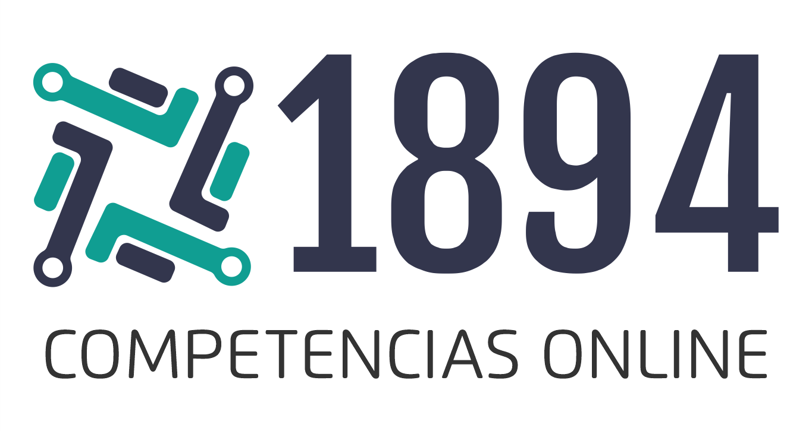

1894
Competencias Online

Universidad del Tolima
Ibagué, Tolima
2022
1.22.12.2
Autores
Leonardo Duvan Restrepo Alape
Licenciado en Matemáticas y Computación y Magister en Biomatemáticas de la Universidad del Quindío. Producción científica de artículos, libros, software educativo; director y jurado de trabajos de pregrado y posgrado. Profesor Asociado T.C. del Departamento de Matemáticas y Estadística de la Facultad de Ciencias de la Universidad del Tolima (desde el año 2015), director del programa de Matemáticas con énfasis en Estadística de la UT (2017), Secretario Académico de la Facultad de Ciencias de la UT (2017 - 2020), Decano encargado de la Facultad de Ciencias (2020-2021), y Decano de la Facultad de Ciencias a partir del 1 de octubre de 2021.
Correo: ldrestrepoa@ut.edu.co
Yadira Caicedo Bravo
Licenciada en Matemáticas de la Universidad de Nariño y Magister y Doctora en Ciencias Matemáticas de la Universidad del Valle. Producción científica de artículos, libros, software educativo; directora y jurado de trabajos de pregrado y posgrado. Profesora Asociada T.C. del Departamento de Matemáticas y Estadística de la Facultad de Ciencias de la Universidad del Tolima (vinculada en el año 2015), Secretaria Académico de la Facultad de Ciencias de la UT desde septiembre de 2020 hasta la fecha.
Correo: nycaicedob@ut.edu.co
Edwin Bernal Castillo
Licenciado en matemáticas y computación de la universidad del Quindio, magister en tecnologías de información y la comunicación aplicadas a la educación de la universidad pedagógica. Doctor en educación. Profesor y director de la licenciatura en matemáticas de la universidad del Tolima.
Correo: ebernalc@ut.edu.co
Descripción
1894 es una plataforma que apoya la gestión académica para la organización de eventos tipo competencias. Permite el montaje de pruebas evaluativas, se organiza a través de fases, identifica acceso a información según su perfil (sea este organizador, administrativo docente, docente o estudiante), permite la comunicación constante con sus actores y la certificación según los resultados obtenidos en las pruebas. Así mismo, permite identificar, según el criterio de los organizadores, los ganadores de cada prueba de forma automática. \\
Nace a partir de la experiencia de sus autores con el proyecto de las Olimpiadas Regionales de Matemáticas de la Universidad del Tolima, como estrategia de mejora y optimización del mismo proyecto. A partir de los efectos de la pandemia en 2020 se hizo un llamado a la reconfiguración y alcances de un nuevo contexto de mediación tecnológica. Es así que la plataforma amplía su alcance y, adicional a los estudiantes de las Instituciones Educativas de Ibagué, permite la participación de grupos provenientes de otros municipios del Tolima, la región, el país o incluso ubicados por fuera de él, dándole nuevas perspectivas y posibilidades de alcance. Ahora, con 1894, una plataforma de estas características no solo es posible participar en pruebas desde cualquier lugar, sino crear sus propias olimpiadas y convocar a quien desee, no solo a sus estudiantes sino a otras instituciones. \\
Su estructura abierta multidisciplinar permite diseñar y poner en ejercicio la construcción de pruebas de olimpiadas de conocimientos en distintas áreas, no únicamente en el área de las matemáticas. \\
A través de un usuario registrado en 1894, los estudiantes pueden acceder a las pruebas y participar de cada competencia de olimpiadas. Integra en un único espacio la administración de la olimpiada con sus respectivos niveles (grados escolares) y fases (etapas) de la olimpiada, además permite la inscripción en línea de las instituciones y estudiantes, la invitación por correo electrónico desde la base de datos de la plataforma, personalización de la cantidad de preguntas por pruebas, definir un umbral de clasificación, escoger entre si se requiere un tipo de prueba abierta o cerrada, evaluación de grupos no importando su tamaño(grandes o pequeños), estadísticas en tiempo real de los resultados que se van obteniendo en las pruebas, puntuación individual y certificado de participación en distintas etapas de las pruebas, entre otras características. \\
Esto, además de facilitar el trabajo que realiza un equipo coordinador en un ejercicio de olimpiadas, brinda un escenario de sana competencia, transparente, imparcial y eficiente que permite conocer sus resultados de forma inmediata y saber a la institución y el estudiante si continua a la siguiente ronda y de esta forma puedan iniciar el proceso de preparación. \\
De la misma forma 1894 permite un desarrollo procedimental y actitudinal, ya que el estudiante puede mejorar en técnicas y estrategias que lo ayudan a representar conceptos y transformar dichas representaciones en habilidades y destrezas para elaborar, comparar, ejercitar y argumentar desde el conocimiento matemático. \\
Generosa en posibilidades, brinda la posibilidad de personalizar cada olimpiada por niveles. Así por ejemplo, una institución podría hacer sus olimpiadas internas en cualquier área y definir que solo algunos – o todos- los grados de escolaridad de su institución fuesen a participar. En el ejemplo, esta institución podría definir que solo participaran estudiantes desde cuarto hasta décimo y, teniendo en cuenta la organización de los DBA por agrupación de grados escolares, hacer pruebas agrupadas. La institución podría llegar a definir el siguiente esquema (el cual se puede personalizar a sus necesidades): \\
\begin{itemize}
\item los estudiantes de 4 y 5 de primaria agruparlos en un solo nivel y llamarlos “semillitas”
\item los estudiantes de 6 y 7 en otro nivel y llamarlos “exploradores”
\item los estudiantes de 8 y 9 en otro nivel y llamarlos “conquistadores”
\item los estudiantes de 10 en otro nivel y llamarlos “colonizadores”
\end{itemize}
Estos nombres pueden cambiar de acuerdo a los intereses y visión de la institución y dan la oportunidad que se ajusten a sus propios contextos e intereses. Esto genera sentido de pertenencia por la competencia y su nivel. \\
Incluso dentro de la misma prueba, esta institución podría llegar a plantear que cada año se haga énfasis en un solo (o algunos) tipo de pensamiento matemático o área. Un año en Geometría, el siguiente en Algebra, después en Estadística, Cálculo o trigonometría y así. Quizás, la institución agrupe dos o tres de ella en cada prueba o, incluso, todos. \\
Para las instituciones que son amantes de la escritura en lenguaje matemático avanzado, la plataforma reconoce lenguaje proveniente de software como Látex. \\
Las experiencias previas con olimpiadas matemáticas, y según comentarios de los profesores que sirven de enlace entra la universidad y las instituciones educativas, se ha identificado que tenemos, en gran medida, un valor agregado en el mejoramiento de las competencias matemáticas básicas: interpretativa, argumentativa y propositiva, así como las específicas: razonamiento, modelación, comunicación y resolución de problemas. \\
No se busca que 1894 de respuesta a todos los problemas y retos que tienen las instituciones educativas en relación a los bajos resultados en el desarrollo de habilidades matemáticas dentro de cada uno de los pensamientos y que son fácilmente evidenciables a través de pruebas como Saber y Pisa. Se espera que esta plataforma fomente nuevas iniciativas que se complementen entre sí a los diversos en ejercicios prácticos abordados desde lo numérico, lo espacial, lo métrico, lo variacional y lo aleatorio; pensamientos que no están totalmente aislados y que requieren de estrategias que permitan integrarlos. \\
Antes de la pandemia COVID-19, las Olimpiadas Matemáticas se hacían a través de medios tradicionales y de manera presencial en las instituciones donde, en algunas ocasiones, se convierten en desplazamientos complejos y costosos, ocasionando que muchos estudiantes e instituciones perdieran la posibilidad o la iniciativa de participar por la falta de recursos, tiempo o flexibilidad. La calificación de las pruebas a todos los estudiantes generaba a sus encargados un gran desgaste institucional y personal desde lo académico, personal, social y administrativo que desalentaba a cualquier institución a asumir este reto. Ahora, desde cualquier lugar, cualquier institución puede hacerlo reduciendo ampliamente todos esos factores que lo impedían, democratizando en igualdad de condiciones estas posibilidades y, de paso, mitigando el impacto ambiental que tiene el uso del papel y que no se compadece con los tiempos actuales que obliga a dar una mirada hacia el uso de recursos tecnológicos. \\
1894 no es solo una apuesta al desarrollo de la tecnología y la educación matemática, es un ejercicio de equidad y calidad. Se robustece a partir de su propia experiencia y cada ejercicio nos da insumos para mejorarla. \\
Los Autores. \\
Manual de Usuario
Inicio de Sesión
Para iniciar sesión ingresamos al vínculo \url{http://localhost/1894/#/inicio} e introducimos el usuario y contraseña, seguidamente pulsamos en el botón [Ingresar]
Menú principal
El menú prinicipal contiene varias opciones:
\begin{enumerate}
\item La descripción de la plataforma.
\item La imagen de perfil.
\item El botón para ingresar al menú de administrador.
\item El botón para presentar las pruebas.
\item El botón para registrar a los estudiantes de una institución.
\item El botón para buscar los puntajes de pruebas presentadas.
\end{enumerate}